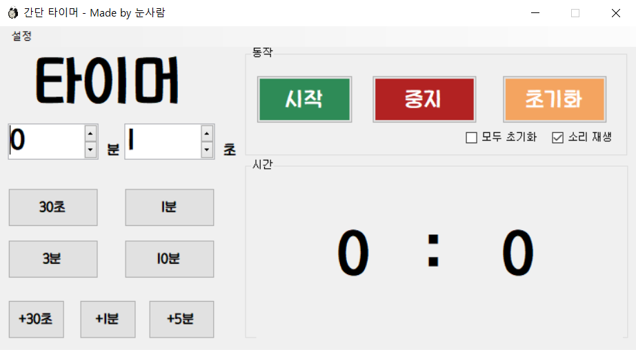
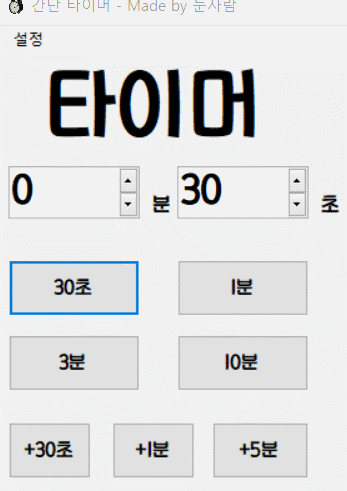
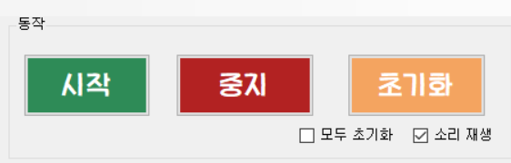
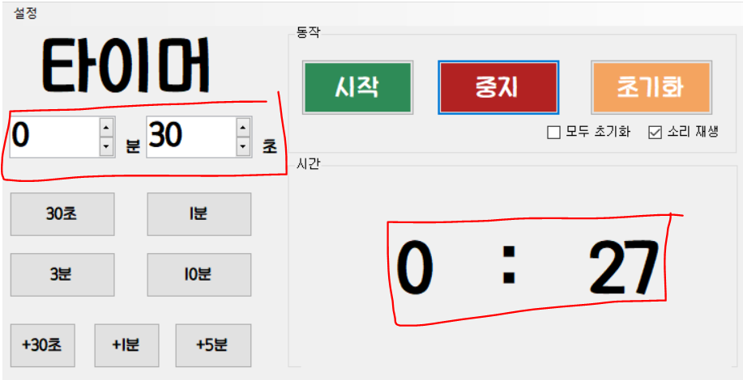
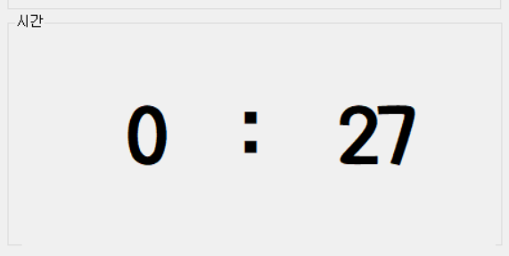
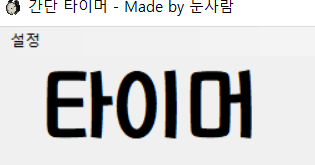
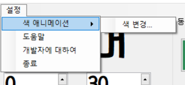
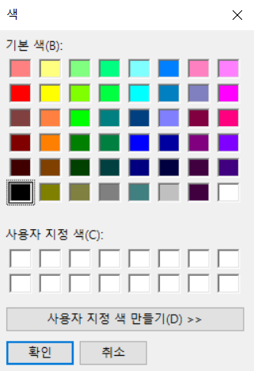
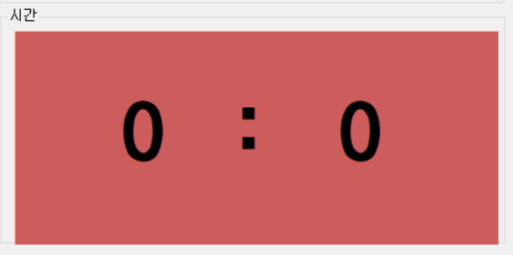
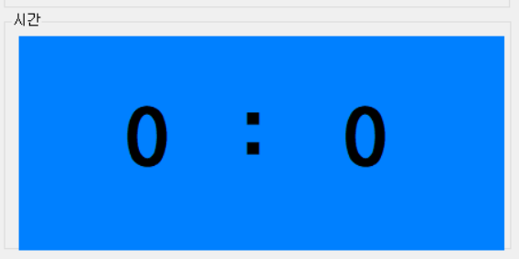

간단 타이머 사용방법
이 글은 첫번째 버전 기준으로 작성되었습니다. 최신 버전과 다를수 있습니다.

기본 화면
타이머는 전체적으로 4개로 나뉩니다.
첫째 : 시간 설정창
시간 설정창에는 수동설정가와 자동설정 버튼이 있습니다.
0분, 1초라고 써있는부분이 수동설정기입니다. 직접 시간 조정할수 있습니다.
아래의 버튼들이 자동설정기입니다.
자동이라고 하기는 좀 그렇지만 좀더 편하게 설정할수 있습니다.
위의 4개 버튼은 프리셋, 아래 3개 버튼은 시간 추가 버튼입니다.
프리셋 버튼은 시간이 "설정"되지만 추가 버튼은 시간이 더해집니다.

프리셋과 시간 추가 버튼의 차이
둘째 : 동작 창

동작 창의 기본모습
동작 창은 타이머를 실행시킬수 있게 해주는 창입니다.
시작, 중지 ,초기화 그리고 두개의 세팅이 있습니다.
시작 : 타이머를 시작합니다
중지 : 타이머, 알림, 색 애니메이션을 중지합니다.
초기화 : "모두 초기화" 설정에 따라 시간을 0으로 초기화합니다.
모두 초기화 : 두개의 타이머 창을 모두 초기화할수있는 옵션.

두개의 타이머 창
소리 재생 : 알림음을 재생할지 여부
셋째 : 시간 표시창

시간 표시창의 모습
시간 표시창은 타이머에서 남아있는 시간을 알려줍니다.
또한 색 애니메이션도시간 표시창에서 나타납니다
넷째 : 설정 창


설정 창을 펼치지 않은 모습과 펼친 모습
1) 색 애니메이션 - 색 변경
색 애니메이션에 쓰이는 색을 바꿉니다

색 창, 바꾸기전, 바꾼 후의 모습
2)도움말
현재 웹페이지로 이동합니다.
3) 개발자에 대하여
개발자 웹페이지로 이동합니다.
3) 종료
말 그대로 프로그램을 종료합니다.
간단 타이머 최신 버전 다운로드하기 ↓